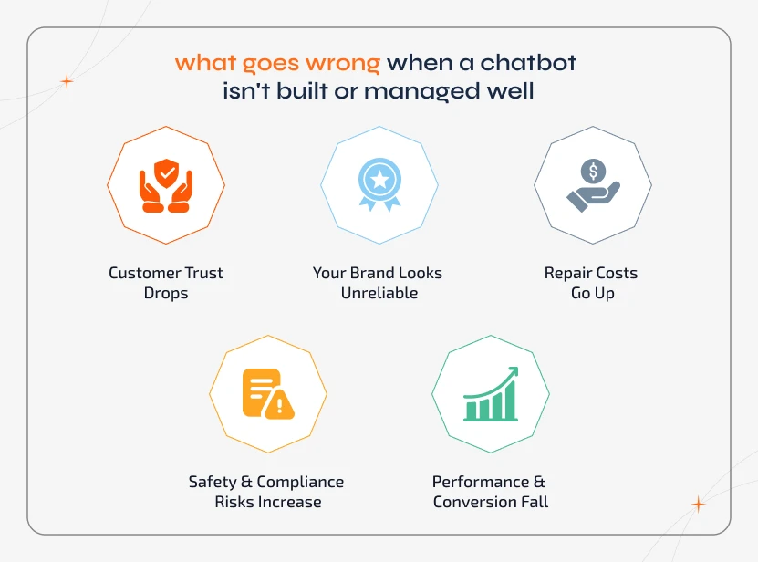

AI chatbots have become an essential entity for modern businesses as they help teams to seamlessly handle customer interactions and deliver consistent digital experiences. But despite their growing adoption, chatbots still fail more often than most teams expect. The most common signs of chatbot failure include the chatbot giving inaccurate answers, breaking the flow of a conversation, or frustrating users with irrelevant responses. All these AI chatbot mistakes directly impact customer satisfaction, increase support costs, and weaken your overall brand trust.
In this blog, we break down why chatbots fail, the most common AI chatbot mistakes businesses make, and the practical fixes that actually improve chatbots' performance. No matter if you are about to build an AI chatbot for the first time or trying to optimize an underperforming system, this guide will help you avoid costly pitfalls and thereby build a AI chatbot that delivers consistent and measurable results.
What are AI Chatbot Mistakes
AI chatbot mistakes, aka common chatbot errors or AI chatbot problems, are nothing but failures in how a chatbot understands the user intent, processes language, and delivers responses. These issues can occur due to poor NLP interpretation, poor training data, design flaws, or even due to missing safety measures.
The most common and widely known example is the Microsoft AI chatbot failure. This issue has gone viral after the model began generating inappropriate content due to limited training controls and inadequate oversight. This issue is one of the strongest reminders of how quickly things can go wrong without proper preparation.
Most often, chatbot failures happen when the bot:
- Finds it difficult to understand natural language.
- Uses incomplete, outdated, or biased training data.
- Lacks proper safety rules, ethical boundaries, or fallback logic.
- It was launched too quickly without thorough testing.
Understanding these early mistakes is important as it helps businesses avoid costly AI project failures later. This way, it is possible to build AI Chatbot systems that are safe, accurate, and truly helpful for the users.
Why is it Vital for Businesses to Avoid Costly AI Chatbot Mistakes?
When an AI chatbot fails, it not only affects one single conversation. Instead, it affects the entire customer experience from first touch to long-term retention. That's why avoiding chatbot mistakes is very important for every business.

Here is what goes wrong when a chatbot isn't built or managed well:
1. Customer Trust Drops
Most often, irrelevant answers
or repeated "I didn't understand" replies from the AI chatbot will make users
feel frustrated, and they will move away without trust.
2. Your Brand Looks Unreliable
Users see a bad chatbot
as a sign of poor service on the whole, which affects the brand reputation.
3. Repair Costs Go Up
Fixing up a poorly built AI
chatbot at any time later is going to be much more expensive than building it
right from the start.
4. Safety & Compliance Risks Increase
Without the right
safety rules, a chatbot can share incorrect or harmful information.
5. Performance & Conversion Fall
A chatbot that cannot
provide accurate answers will not help users or reduce support workload.
When all these are put together, most chatbot failures happen because they weren't planned, trained, or monitored properly. With better planning and preparation, your AI chatbot will be reliable and more successful.
Stop Costly Chatbot Mistakes Before They Hurt Your Business
Hire experts to fix performance issues before they become costly problems.
The Most Common AI Chatbot Mistakes & How to Fix Them
Businesses across different industries come across the same type of AI project failures. These recurring mistakes often weaken the performance, frustrate users, and increase the support costs. Check out the most common issues and how to fix them efficiently.

1. Poor Training Data
This is often the root cause of
most chatbot training issues. It occurs when the training data is limited,
outdated, or has biased data. As a result, the chatbot struggles to understand
users and ends up giving irrelevant answers.
- Fix: This issue can be fixed by using diverse, real-world datasets, updating them regularly, and retraining your chatbot often.
2. Overly Complicated or Confusing Conversation Flows
Most often, conversation design mistakes appear whenever the
conversations don't reflect real human dialogue.
- Fix: It is vital to keep the flow simple, intent-driven, and easy for the users to follow.
3. No Smooth Escalation to Human Agents
A common
chatbot issue that traps users in a loop is that the bot doesn't have an option
to let the user talk to a real person.
- Fix: This can be fixed by adding a smart escalation logic that sends users to an agent when the bot is unsure of the answers.
4. Lack of Personalization
Generic, one-size-fits-all
responses often reduce engagement and affect the conversations.
- Fix: It is better to use customer data like history, preferences, and context to make replies more relevant.
5. Not Monitoring the Chatbot's Performance
When there
is no ongoing monitoring, performance problems occur and it will stay hidden
until customers start to complain.
- Fix: This can be resolved by tracking accuracy, response speed, user satisfaction, click-throughs, and containment rates.
6. Security Gaps & Missing Ethical Controls
When safety
and ethics are ignored, then chatbots will bring in misinformation, biased
responses, and even compliance violations.
- Fix: It is vital to add content moderation, safety rules, and strong, responsible AI policies.
7. Deploying the Chatbot Too Early
When businesses rush
to launch chatbots without proper testing, then it leads to bugs, broken flows,
and user frustration.
- Fix: It is better to run beta testing, stress testing, and scenario-based evaluations before going live.
8. Not Updating the Chatbot Regularly
AI systems
degrade over time when they aren't allowed to learn from new customer behaviour
or product updates.
- Fix: To resolve this issue, it is vital to refresh training data, update FAQs, and improve intents on a regular schedule.
9. Ignoring Edge Cases & Rare Scenarios
AI chatbots
often fail when users happen to ask some unusual or unexpected questions.
- Fix: It is required to train chatbots by adding fallback responses, clarify intent, and gradually expanding the coverage based on real user queries.
10. Designing only for Text & Not Multichannel
Experiences
Most often, many businesses create
chatbots that will work only on one platform and fails on the others.
- Fix: Designing the bot to perform well on web, mobile, social, and voice channels is important.
The Hidden Reasons Why AI Chatbots Fail
It is worth noting that not all the chatbot failures happen due to technical problems. A lot of issues occur due to organizational or strategic gaps that teams miss to notice at the early stage. These hidden factors often help find whether a chatbot struggles or succeeds.
Here is what usually goes wrong behind the scenes:
1. Misalignment between business goals and chatbot capabilities
Teams often expect that chatbots will do things that weren't
designed or trained to do. This, in turn, leads to poor performance and unmet
goals.
2. Lack of skilled team members managing training & optimization
Chatbots are not about setting up and forgetting them.
Without people who understand NLP, data, and conversation design, chatbots'
performance drops over time.
3. Poor expectation-setting from leadership
Leaders, at
times, expect a chatbot to replace entire teams or handle complex tasks
instantly. Due to unrealistic expectations, chatbots often get under pressure
and create disappointment.
4. No clear success metrics
When a business fails to
define what success is all about, like accuracy, CSAT conversation, and
containment rates, the chatbots can neither be measured nor improved
effectively.
5. Underestimating maintenance requirements
Chatbots
should be provided with regular updates, retraining, and monitoring. Whenever
teams underestimate the ongoing maintenance, the AI chatbot will become outdated
and less useful.
All of the above are the invisible barriers that explain why chatbots fail despite using advanced technology. So, the real problem is not always the AI; it is the strategy, planning, and ownership that are present around it.
Uncover the Hidden Issues Holding Your Chatbot Back
Get expert guidelines on unseen gaps in strategy, training, and planning.
Additional Strategic AI Chatbot Mistakes Businesses Often Overlook
Beyond technical and data-related issues, many AI chatbots fail due to strategic oversights that teams don’t look at in an early stage. These issues often lead to bigger AI Chatbot performance issues, poor chatbot implementation, and ultimately become the reason for chatbots' failure despite the technology itself being strong.
Here are the commonly overlooked strategic mistakes:
1. Misalignment between chatbot goals and business goals
When the chatbot is designed for tasks that don’t match the
real business needs, then it underperforms and delivers low value.
2. Deploying without conversation design standards
Launching an AI chatbot without clear flow patterns, tone
guidelines, or interaction rules creates inconsistent responses and confusing
user experiences.
3. Ignoring multilingual support
Many customers look
for multiple language support. Without it, the users feel excluded, and the
chatbot loses effectiveness when it comes to the global markets.
4. Not testing edge cases
Most failures occur in
unexpected scenarios. i.e., if teams don’t test unusual questions or rare
situations, AI chatbot performance issues are going to appear immediately after
the launch.
5. Mismanaging expectations during rollout
When
businesses oversell what the chatbot can do, there is a chance for the users to
expect too much and quickly lose trust if the bot falls short.
All of the above are the strategic gaps that can undermine even the best chatbot implementation efforts. Hence, it is important to fix them early to ensure your chatbot is reliable, scalable, and aligned with real business outcomes.
Know the Technical Challenges Behind AI Chatbot Mistakes
Occasionally, even the most advanced AI chatbots come across technical challenges that directly affect accuracy, speed, and user experiences. These issues add up quickly and often turn small errors into bigger problems.
Things that typically go wrong include:
1. LLM Hallucinations
Large language models sometimes
generate incorrect answers confidently. This leads to misinformation, user
confusion, and inconsistent chatbot behaviour.
2. Latency Spikes
Slow response times break the flow of
the conversation and may frustrate the users. They are caused by heavy models,
server overload, or poor infrastructure.
3. Poor API Orchestration
When a chatbot relies on
multiple APIs like CRM, payments, etc., weak integration becomes the reason for
broken responses, incomplete data, and failed actions.
4. Weak Entity Recognition
When the chatbot can't
identify key information like names, order IDs, dates, etc., correctly, it
mispredicts the users and often gives inaccurate outputs.
5. Training Data Drift
User behaviour changes over
time, and if the chatbot isn't updated regularly, its predictions become less
accurate. This is because the data no longer means the real-time scenarios.
The above technical chatbot challenges lead to multiplying problems. This includes higher error rates, more user escalations, and higher maintenance workload. Addressing them at the earliest makes the AI chatbot reliable.
Why Ethical Mistakes in AI Chatbots are a Rising Business Threat
In addition to technical risks, ethical issues in AI chatbots are major business risks. When companies overlook ethical practices, they expose themselves to regulatory penalties, brand damage, and safety issues for their customers.
The most common ethical pitfalls include:
1. Biased Responses
When the training data contains
bias, it is obvious for the chatbot to produce discriminatory or unfair outputs
that may harm the user's trust.
2. Unsafe or Harmful Outputs
When there are no proper
safety rules set, then the chatbots will spread misinformation, provide
dangerous advice, and respond inappropriately.
3. Lack of Disclosure
When people don't know that they
are interacting with AI, it creates transparency issues. This, in turn, violates
emerging regulations as well.
4. Mishandling Sensitive Data
Often, poor privacy
practices like storing personal information incorrectly can bring in legal
consequences and security breaches.
For all these reasons, organizations should embed the ethics of chatbots into every stage of their development process. Starting from data collection to model training and deployment, ethical controls ensure the chatbot is safe, trustworthy, and compliant.
How Does Poor Integration Create AI Chatbot Problems
Chatbots are effective only based on the systems they connect with. When the integrations fail, even the best AI model will not be able to deliver accurate or timely responses.
The following are integration issues that typically occur:
- Delayed or outdated information.
- Broken or incomplete workflows.
- Failed automations that stop mid-process.
- Incorrect or inconsistent output data.
Most often, the biggest enterprise AI chatbot problems don't occur due to the chatbot itself. The reason would be because of weak integrations with CRMs, ERPs, ticketing systems, and other backend tools. Thus, it is vital to have strong integrations for a chatbot to perform well.
AI Chatbot Testing Framework - How to Prevent Mistakes Before Launch
Testing is one of the most reliable approaches to finding and fixing common chatbot errors before that happens to real users. A strong testing framework is essential, and it allows the chatbots to behave accurately, safely, and consistently under different situations.
A complete testing process includes:
- Verifying each intent is recognized correctly and mapped to the right response.
- Regression analysis ensures new updates don't alter the features that were already working.
- Load, stress, and latency testing help find how the chatbot performs during high traffic and whether response times are stable.
- Bias testing helps find harmful, biased, or inappropriate outputs before they cause real-world issues.
- A/B testing helps compare different versions of prompts, flows, and responses to find what works best.
- Real user beta testing helps uncover edge cases and unknown chatbot issues.
Skipping or rushing the above process may result in AI chatbot failure. So, with the thorough testing, your chatbot becomes reliable, safe, and ready for real-world use.
The Cost AI Chatbot Mistakes - How Much Businesses Really Lose
AI chatbot mistakes not only create bad conversations, but also create revenue losses silently to the business. Whenever an AI chatbot for a website underperforms, the financial impact will spread across the entire business, and here is all that you should know about the real cost that it creates:
1. Customer Churn - Often, users get frustrated and leave. This reduces long-term revenue and brand trust.
2. Extra Support Staffing - When the chatbot fails to handle the queries, human agents should step in, and this, in turn, raises the operational costs.
3. Lost Upsell Opportunities - Any poor-performing bot will miss the moments to recommend products or guide users to the next step.
4. Frequent Redevelopment - When the initial AI chatbot design goes bad, it leads to constant fixes, rework, and redevelopment cycles.
5. Higher Chatbot Implementation Cost Overall - The longer the chatbot issues go unaddressed, the more expensive it becomes to rebuild the system.
So, fixing up the AI chatbot mistakes at the early stage not just improves the user experience but also prevents long-term financial damage.
Don’t let chatbot mistakes cost you more
Partner with us to create an AI chatbot that saves money, boosts operational efficiency, & generates long-term business value.
Signs Your Chatbot Has Training Issues & How to Fix Them
A lot of chatbot problems begin with poor or incomplete training. When your bot isn't learning from real user behaviour or lacks enough examples, then it will struggle to respond correctly.
Here are the key warning signs:
- Due to low intent, the chatbot often misunderstands what users are asking.
- Finding fallback messages like "I didn't understand," or other generic error replies.
- The bot gives different or incorrect responses to the same question.
- Customers are reporting frustration, confusion, and an inability to get help.
- Too many conversations are being handed off to the human agents.
All of the above symptoms show significant training gaps. In order to fix the training issues, it is vital to expand your dataset with real user queries, add more variations to intents, and fine-tune the model to improve accuracy and consistency.
AI Best Practices to Eliminate Chatbot Performance Issues
With ongoing tuning, AI chatbot performance issues can be fixed. The following best practices help your chatbot to stay accurate, stable, and useful over time.
- Audit NLP models regularly and update the model when performance drops.
- Keep training data current by adding new queries and real conversations.
- Combine retrieval with generative AI for more factual, reliable answers.
- Enhance embeddings and ranking so the bot finds the most relevant information.
- Allow the chatbot to remember previous messages for smoother, more natural replies.
- Use real user feedback to refine responses and improve overall behaviour.
How to Build AI Chatbots That are High-Performing
In order to prevent AI chatbot failures and build a system that performs reliably, businesses should follow a structured approach. Following the best practices helps avoid common development challenges and ensures the chatbot delivers real value.

1. Define Clear Business Goals
Begin with a clear
objective of what the AI chatbot for website should
achieve. i.e., support, automation, or sales before designing or training it.
2. Train with Diverse, Real-World Data
Use a wide
variety of user queries and examples to train the bot. This helps the bot to
understand the different intents and speaking styles.
3. Use Enterprise-Grade AI Architecture
Choosing a
strong infrastructure provides better speed, accuracy, and scalability as the
usage increases.
4. Add Ethical & Safety Layers
Safeguards prevent
harmful, biased, or non-compliant outputs.
5. Implement Human-in-the-loop Controls
Let human
agents review, guide, and correct the chatbot when needed to maintain the
quality.
6. Enhance Performance through ongoing optimization
Monitor metrics, update datasets, and improve conversation
flows regularly.
This structured approach dramatically reduces chatbot development challenges and helps you build AI chatbots that are high-performing and stay reliable over time.
How AI Enhances Chatbot Optimization
AI plays a major role in improving the chatbot's performance. With the right optimization techniques, a basic chatbot works smarter, faster, and more helpfully for the users.
Here is how AI-driven optimization helps:
1. Intent Accuracy
Advanced models have a better
understanding of what users are asking. This includes slang, typos, and complex
phrasing.
2. Context Retention
AI allows the bot to remember the
past messages and maintain continuity throughout the conversation.
3. Response Relevance
Machine learning fine-tunes the
chatbot, and thus replies match the user's needs more precisely.
4. Sentiment-Aware Interactions
The chatbot can detect
user frustration or satisfaction and thus adjust its tone or actions
accordingly.
5. Predictive Support
AI has the capacity to anticipate
what users might need next and thus offers proactive suggestions or actions.
Put together, these capabilities will transform an average chatbot into a high-performance digital assistant that feels more natural, helpful, and reliable for the users
When To Replace Your Existing Chatbot
Not always chatbot need to be fixed. It depends on factors like outdated technology or limited modern AI capabilities. When you happen to see such signs, it implies the time to replace your chatbot entirely.
1. Repeated User Dissatisfaction
Continuous complaints or low satisfaction scores show the bot can't meet user expectations.
2. Slow or Inaccurate Responses
Delayed replies and incorrect answers mean a signal deep technical or model limitations.
3. Frequent AI Chatbot Performance Issues
If bugs, errors, or breakdowns appear constantly, even after fixes, then the system may not be scalable.
4. Rising Manual Support Tickets
When more conversations end up with human agents, the chatbot is failing to handle its workload.
5. Outdated Architecture
Legacy systems, at times, don't integrate with modern AI models, APIs, or security standards.
6. High Maintenance Cost
When constant patching and troubleshooting cost more than upgrading, it's no longer worth keeping.
The above signs indicate that the chatbot is failing beyond practical repair. Thus, replacing the system with a modern AI chatbot can improve performance, reduce costs, and restore user trust.
Upgrade to a Future-Ready Chatbot With Sparkout
Replace outdated bots with Sparkout’s modern AI chatbots built for accuracy, speed, & enterprise-scale performance.
Future Trends in AI Chatbot Development & How to Avoid New Mistakes
AI chatbot technology is evolving quickly, and the next generation of chatbots will be far more intelligent, proactive, and integrated than the current systems. Understanding these trends is vital for any business to prepare early and thereby avoid the new mistakes that come with innovation.
Here are the major trends shaping the future of AI chatbot development:
1. Multimodal Chatbots
Bots will understand not just text, but also images, voice, documents, and video. Thus, they become more interactive and accurate.
2. Autonomous AI Agent
Instead of waiting for user instructions, agents will take actions on their own to complete tasks and optimize workflows.
3. Personalization at Scale
AI will customize every conversation based on the user behaviour, preferences, and real-time context for hyper-personalized experiences.
4. Domain-Specialized AI
Industry-specific models will outperform general-purpose chatbots, delivering deeper accuracy for healthcare, finance, and retail.
5. Regulatory Compliance Automation
Built-in compliance checks will minimize the risks by ensuring responses follow industry regulations and company policies.
By staying ahead of these trends, businesses can prevent AI chatbot mistakes before they happen.
Our AI Chatbot Services - We Fix All Common Chatbot Mistakes
At Sparkout, we help businesses build, optimize, and scale AI chatbots that actually work. From development to continuous improvement, our team of experts ensures you don't deal with AI chatbot problems that most companies are struggling with. This includes poor accuracy, broken flows, weak integration, and performance issues.
Our Service Includes:
1. Custom AI Chatbot Development
We customize chatbots that are built around your business goals, workflows, and customer needs.
2. Enterprise AI Chatbot Services
We offer scalable, secure solutions designed for large teams, complex processes, and multi-channel deployment.
3. Chatbot Migration & Modernization
Our team handles upgrading outdated systems to advanced, high-performance AI architectures.
4. NLP Optimization
We improve intent accuracy, entity recognition, and natural language understanding.
5. AI Safety & Ethical Guardrails
Sparkout ensures to protect your chatbot from harmful, biased, or non-compliant outputs.
6. Performance Monitoring & Training
We make continuous tuning to maintain accuracy, speed, & reliability over time.
If your chatbot is failing, we will transform it into a high-performing digital asset that drives efficiency, reduces costs, & enhances customer experience.
Why Choose Us for AI Chatbot Development & Optimization
Businesses choose to partner with Sparkout because we don't just build chatbots but also deliver measurable improvements that directly impact performance, customer experience, and operational efficiency.
Here is what sets us apart:
1. Higher Accuracy
We design your chatbot in such a way that it consistently understands user intent and delivers precise responses.
2. Stronger Compliance
With built-in safety, governance, and ethical controls, we ensure that your chatbot is aligned with regulatory standards.
3. Greater Efficiency
By automating workflows and smarter responses, the chatbots we deliver will reduce your workload for support teams.
4. Improved User Satisfaction
Faster, more relevant answers lead to better customer experiences and higher engagement.
We also help lower your overall chatbot implementation cost by designing scalable, future-ready AI systems that grow with your business. The best part of partnering with us is that you will get the benefits without expensive rebuilds.
Our End-to-End AI Services Beyond Chatbots
We offer a complete ecosystem of AI solutions that help support, extend, and enhance your chatbot strategy.
Here is what sets us apart:
1. AI App Development
At Sparkout, we build intelligent, scalable AI-powered applications that automate work, improve decision-making, and deliver personalized user experiences across web and mobile.
2. AI Agent Development
Our autonomous AI agents handle complex tasks, streamline operations, and work alongside your team to boost productivity and efficiency.
3. Enterprise AI Chatbot Development
We design and deploy secure, enterprise-grade chatbots customized for large-scale operations, multi-channel environments, and high-volume customer interactions.
4. Custom Chatbot Solutions
Whether you need a domain-specific chatbot, a workflow assistant, or a fully integrated support solution, we create custom chatbots that work for your unique business needs.
Expand Your AI Capabilities Beyond Chatbots
At Sparkout, we develop advanced AI solutions engineered to scale, automate, and power your business forward.
Conclusion
Upon understanding these common mistakes and embracing modern AI best practices, you can effortlessly design systems that are smart, safe, and far more effective. With the right development partner, strategy, tools, and ongoing optimization, a chatbot becomes a powerful competitive advantage.